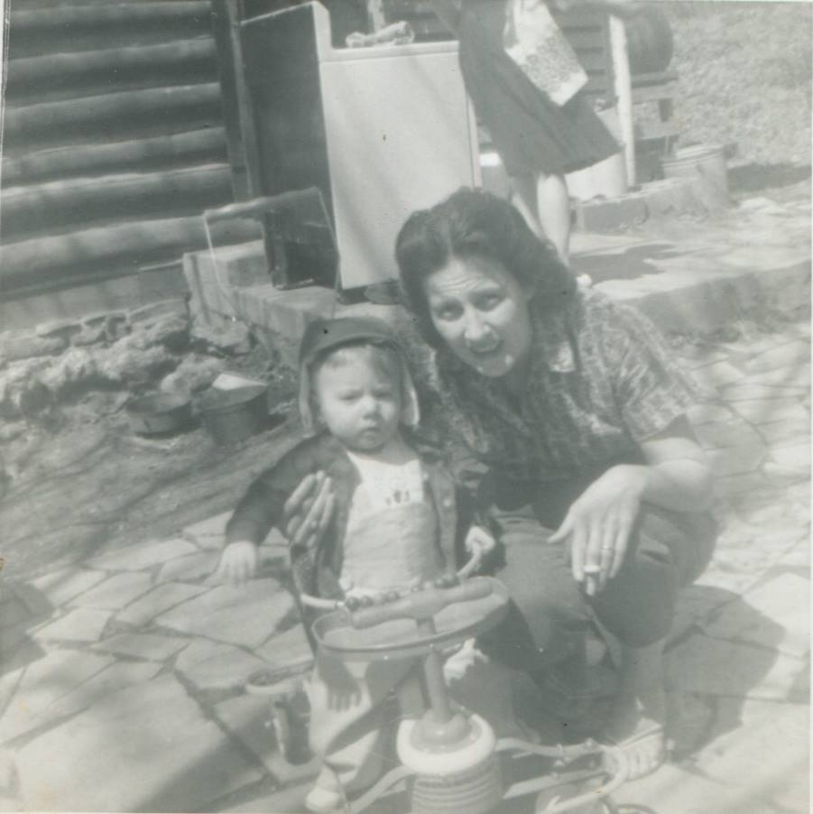

About Me
"What is an author but a wriggling bag of experiences. Living breathing stories crying to be set free."

Growing up in the holler in rural Appalachia provided ample opportunities to explore the basics of life. I was born in a log home my grandfather built using lumber he logged from up in the holler. Traipsing to the branch to pick watercress, throwing rocks in the pond, and even surprising a snake or two along the way. As time moved on so did my young mind. Comic books came first, which led to books with words. Ultimately the sky was the limit as I discovered fantasy and science fiction.
A dismal attempt at university led me down a different path. The world of nuclear reactors in submarines deep beneath the waves. I can recall many hours spent in the engine room letting my mind drift to the multitude of possibilities in life; my first foray into creative thinking really. Occasionally I'd chuckle at the dirty little kid raised in the holler now punching holes in the water. Underway on nuclear power.
And even in the Navy I managed to have diverse experiences. What Naval enlistment would be complete without a tour in Idaho, cosplaying as a cowboy?
Post-Navy I spent almost a decade working at the Oak Ridge National Laboratory. I was posted in their biology division, their fusion energy division, and ultimately wound up in the fledgling computer section of our group. I discovered I had a bit of an affinity with software, and lacking the requisite degree to progress at ORNL, I chose to move into software development full-time.
Cut scene to a little over two decades later and I'm now retired from software development. And honestly, tired of that profession's overuse of semi-colons, I've now chosen to try to write in the ultimate development language... plain old conversational language.
Let's draw inspiration from our multitude of life experiences. Let's create stories exploring regular people responding to and (hopefully) overcoming life-altering events.
Currently I am working on an Appalachian crime drama as well as a crime thriller set in '80s Las Vegas. And let's not forget a couple of dozen short stories in various levels of "not quite ready yet."
And lastly, when not writing, you can find me in the woods hiking, on the water in a lake kayak, or quite possibly rolling dice at a D&D table.